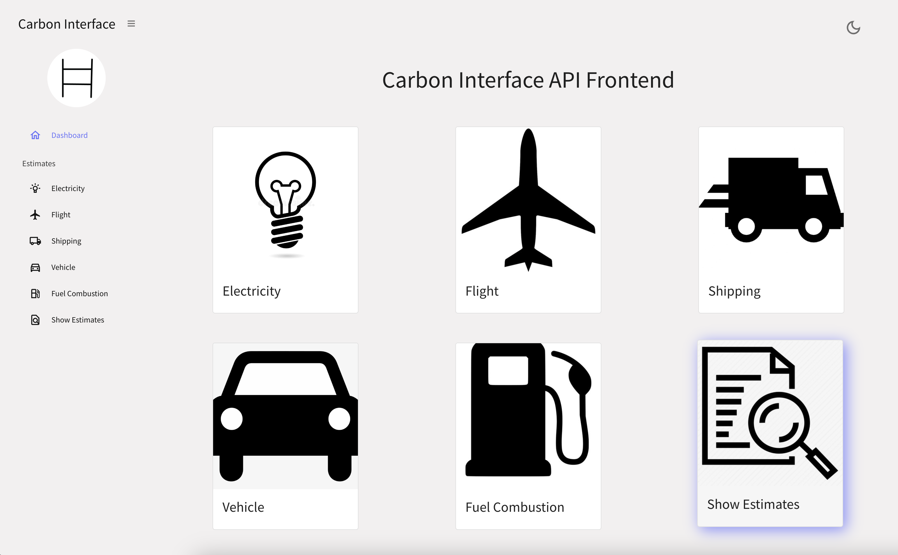
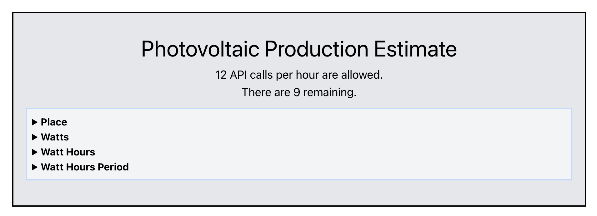
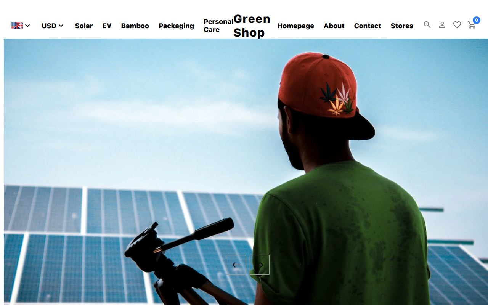
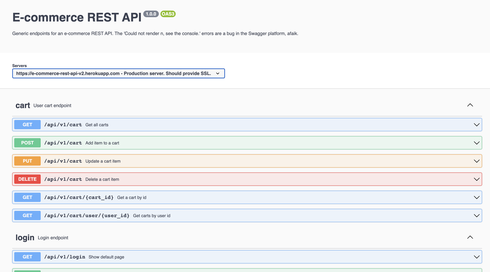

portfolioPortfolio
Hover over the images for more info.
Click the hover for a description of the project.

Carbon Interface API Frontend

Photovoltaic Output Estimation
- TypeScript / React
- 3rd party API integration
- AWS Deployment (S3, API Gateway, Lambda)
Photovoltaic Output Estimation

GreenShop / E-commerce UI
- React 18 / Redux Toolkit
- TypeScript
- Stripe payment API integration
- Vercel deployment / API integration
GreenShop / E-commerce UI

E-commerce REST API
- NestJS / TypeScript
- PostgreSQL database / TypeORM
- OpenAPI documentation
- CI/CD via GitHub Actions
E-commerce REST API
NestJS REST API Template
- NestJS / TypeScript
- TypeORM
- PassportJS Authentication
- CI/CD via GitHub Actions
NestJS REST API Template
Resonate Music Streaming Service
Skill setSkill set
Front End
- Vue.js
- React
- Redux / Redux Toolkit
- EJS / PUG template engines
- Sass / Bootstrap / Tailwind
- TypeScript
- HTML / CSS / Javascript
Middleware / API
- Nest JS / Node JS / Express
- TypeORM
- Swagger / Open API
- ColdFusion MX
Back End
- PostgreSQL
- Mongo DB / Mongoose
- Oracle
- MS SQL Server
Testing
- Jest
- React Testing Library
- Mocha / Chai
- Supertest
Miscellaneous
- Git / GitHub
- Postman
- Passport Authentication Library
- Docker
- Json Web Token (JWT) Authorization
- Stripe Payment API
- Heroku Hosting / Deployment
Open Source Contributor
Other InfoOther Info
Quick info at a glance
Work Info
- German residence/work permit
- Available for free-lance work
- Full and/or part-time possible
Languages
- English (native speaker)
- German (B2 Deutsch für Beruf)
ContactContact
Contact Matt Burnett here
Home
Portfolio
Skill Set
Other Info
Contact